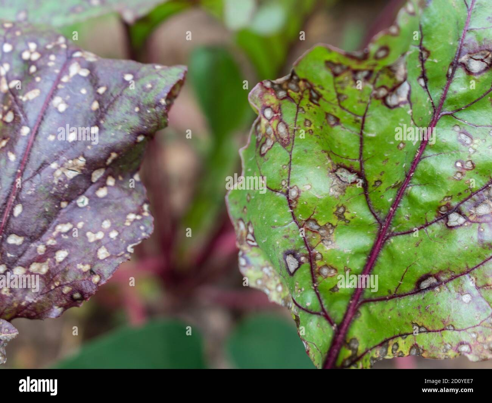

Generative AI Engineer and Machine Learning Engineer specializing in Large Language Models (LLMs), Retrieval-Augmented Generation (RAG), Natural Language Processing, and scalable AI applications. Passionate about building intelligent systems that transform complex data into actionable insights and real-world business impact.
I'm a Generative AI and Machine Learning Engineer with experience building and deploying AI solutions across Healthcare and Banking domains. My expertise includes Large Language Models (LLMs), Retrieval-Augmented Generation (RAG), Prompt Engineering, NLP, and Machine Learning.
I specialize in developing end-to-end AI systems—from data ingestion and preprocessing to model deployment and production monitoring. I've built scalable RAG architectures using LangChain, LlamaIndex, FAISS, and Pinecone, enabling intelligent document retrieval, semantic search, and knowledge assistants.
Passionate about solving real-world business problems through AI, I enjoy creating scalable, reliable, and production-ready applications using Python, FastAPI, AWS, and modern AI frameworks while collaborating with cross-functional teams to deliver measurable impact.
Master of Science in Engineering Science – Data Science
Jan 2024 – Present
GPA: 3.60 / 4.0
Relevant Coursework: Machine Learning, Big Data Analytics, Statistical Learning, Data Visualization
Bachelor of Technology in Computer Science and Engineering
Aug 2019 – May 2023
GPA: 3.5 / 4.0
Relevant Coursework: Artificial Intelligence, Database Systems, Computer Networks, Operating Systems
AI Engineer – YoucGlobal (May 2026 – Present)
Machine Learning Engineer – Vosyn (July 2025 – April 2026)
Data Analyst – Advids (June 2023 – Dec 2023)
Deep Learning Intern – Advids (Jan 2022 – Jun 2022)
GPT, LLaMA, RAG, Prompt Engineering, LLM Evaluation
LangChain, LlamaIndex, HuggingFace Transformers
FAISS, Pinecone, Semantic Search, Hybrid Search
Classification, Regression, Clustering, Feature Engineering, XGBoost, Random Forest, Logistic Regression
NER, Text Classification, Sentiment Analysis, Document Summarization, Information Extraction
Python, SQL
Pandas, NumPy, Data Cleaning, EDA, Feature Engineering
AWS (S3, Lambda, API Gateway), Docker, FastAPI, REST APIs, CI/CD
MySQL, PostgreSQL
Power BI, Tableau, Matplotlib
Git, GitHub, Linux, VS Code, Jupyter Notebook
LSTM model for ICU vitals forecasting with patient-level split.
CNN-based pneumonia detection with Grad-CAM and Streamlit inference..
LLM app for script generation and dialogue refinement.
Offline resume-review system using Zephyr-7B with Llama.cpp, PyMuPDF, and Streamlit to extract PDF text, compute ATS scores, and generate real-time, high-quality feedback.
NLP-based detection model with a focus on identifying cyberbullying content.

Built CNN model achieving 95% accuracy in identifying plant diseases.
Blockchain-based voting system with enhanced security features.
Automated ML pipeline, Dockerized for real-time predictions.
Text-to-emoji mapping using NLP techniques for a fun interactive experience.
Research Area: Deep Learning • Time Series Forecasting • Climate Analytics • Computer Vision
This research investigates the application of Convolutional Long Short-Term Memory (ConvLSTM) networks for forecasting meteorological variables such as temperature, humidity, and atmospheric conditions using spatiotemporal climate datasets. The proposed approach leverages both spatial and temporal dependencies to improve forecasting accuracy compared to traditional machine learning and statistical methods.
Key Contributions: